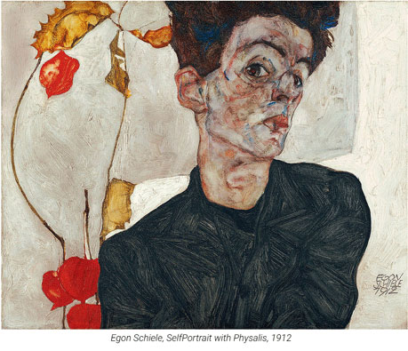
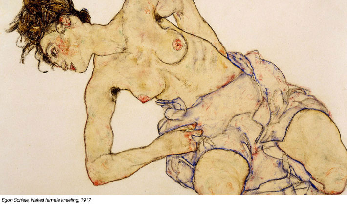
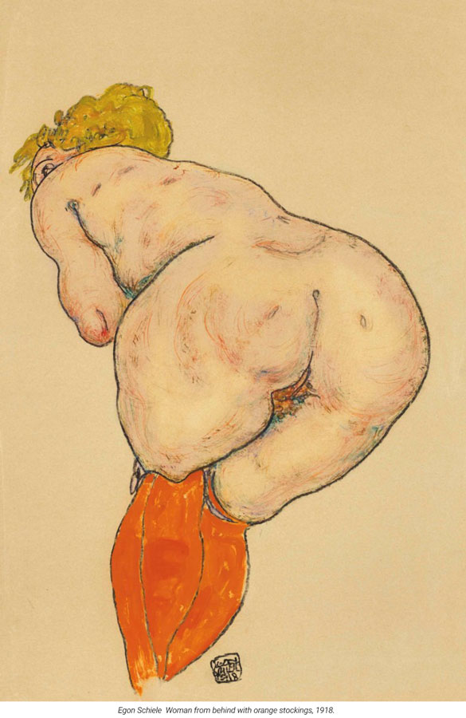
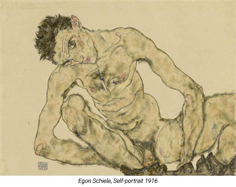
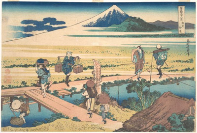

Even today, a century after they were produced, Egon Schiele's drawings have the power to shock numerous people. His work is noted for its intensity and its raw sexuality. But was it only a libidinous obsessions of a wild youth or is it true that Schiele had some serious trouble with controlling his passions?
The 100th anniversary of Egon Schiele’s death has arrived just in time for the #MeToo movement. Which makes it a perfect opportunity to talk about Schiele’s post in pantheon of historical well debuted artist-abusers. Is this position on the list deserved?
Let’s be honest first, Schiele was an art genius. There is a total confidence in his line, a commitment to the figure and a boldness in his imposition of figure on space, that sets him apart from almost any other artist of his time. The more it is the breathtaking fact that he has finished around 2,500 pieces. Although he died young at age of 28.
Yes and over a half of those works on paper were devoted to the subject of women depicted nude or semi-nude. There is no question that his drawings and watercolours are provocative. Nude Girls Reclining (1911), depicts two very young girls lying side by side. Schiele draws their bodies with a steady hand, capturing the curve of one's breast in close juxtaposition with her companion's tuft of pubic hair between neatly defined legs. Pornographic? Inappropriate?
Egon Schiele might have wondered the same thing as he lay on the narrow bed in his jail cell, looking at the feeble light coming in through the solitary narrow barred window above the locked door.
Schiele was arrested in April 1912 on suspicion of showing erotic drawings to young children who posed for him, of touching the children while he drew them and of kidnapping one of the young girls who frequented his studio.
Born in wrong time. Entartete; it means degenerate. It was an overused word, taken absurdly seriously, in Vienna at the beginning of the 20th century. Degenerates were everywhere, you would discover if you read the rightwing anti-semitic press. Degenerates at the opera, in the art galleries.
Degenerate sexualities and degenerate races. It was, incredibly, a serious medical term. In 1905, the great Viennese doctor Sigmund Freud, in his Three Essays On Sexuality, attempted to pour liberal cold water on the fetid notion. "It may well be asked," he drily commented, "whether an attribution of 'degeneracy' is of any value or adds anything to our knowledge."
Egon Schiele in fact was a real feminist. He never crossed the border between the painter and the model, he have never even tried it. Egon has been called the artist who loved vaginas. This is undoubtably true. But it seems that he adored more than just female genitalia, his drawings and paintings show his love of many other parts of women’s bodies: eyes, arms, breasts and buttocks. Schiele just simply loved capturing the female body and admired his beauty.
And yet the fascinating point about Schiele's nudes of his mistresses, his lover, his sister and the prostitutes he later picked up in the street and persuaded to model for him, is how sympathetic they are. They have an obsessive quality in their gaze. And yet women, at least of my acquaintance seem to find them entrancing, honest rather than lecherous. It's because he came across to his models as an equal, not as a predator.
Sympathy and outrage in Vienna's artistic community helped Schiele get back into game. With Klimt's support he found new patrons. Perhaps it was a lingering sense of vulnerability that led him to reject his lover Wally and marry the respectable Edith Harms. And yet he was soon back to his favourite subject, the nude, and Schiele's late erotic drawings - which are all of women, including his wife - have a sculptural quality that is perhaps his most radical conflation of art and pornography.
After the war, Freud rethought psychoanalysis. Having seen the destructiveness of modern warfare, he decided that the libido was not the only driving force in the formation of self: in 1920 he proposed the existence of the death drive.
Is that sexuality truly a kind of superpower, or does feminine allure inevitably entail capitulation to the patriarchy? The enduring relevance of great art lies in such questions, in ambiguous readings rather than simplistic formulations. To brand Schiele a sex offender is not only wrong; it ignores essential historical context and forecloses necessary dialogue.
Egon Schiele never made it into the post-war world. He died in 1918, three days after his pregnant wife, Edith, in the influenza pandemic. Maybe if he did, he would become one of the most unrecognized artists of his times.
Although you may not know the name Katsushika Hokusai, it’s almost guaranteed that you’ve seen at least one of his works:
Under the Wave off Kanagawa (ca. 1830–32), more commonly known as The Great Wave.
Although it was a common practice for Japanese artists to use multiple names, his use far exceeded other major Japanese artists of the time.
His name changes were so frequent and so often related to changes in his artistic style, that they are used to divide his life into periods.
Although Hokusai was prosperous in middle age, his series Thirty-six Views of Mount Fuji in 1830 eventually brought him international acclaim.

During Hokusai’s life, Japan was closed to foreigners. When Japan opened its borders in the 1850s, his work landed in the hands of artists such as Claude Monet, who acquired 23 prints.
Edgar Degas also took cues from Hokusai, in particular his thousands of sketches of the human form.
Hokusai was said to have risen with the sun and painted late into the night.
Although a studio fire in 1839 destroyed much of his work, he is said to have produced some 30,000 paintings, sketches, woodblock prints and picture books.
His last words were a request for five or 10 more years— “then I could become a real painter.”
The word manga roughly means random drawings, and the term is now more commonly associated with a type of Japanese comic that conforms to a style developed in Japan in the late 19th century.
In 1811 at age 51, Hokusai created the Hokusai Manga, which contained amusing images for his students and other aspiring artists to copy.
It became a best-seller and one of the earliest recorded uses of the term manga, though aesthetically is quite different to the modern equivalent.